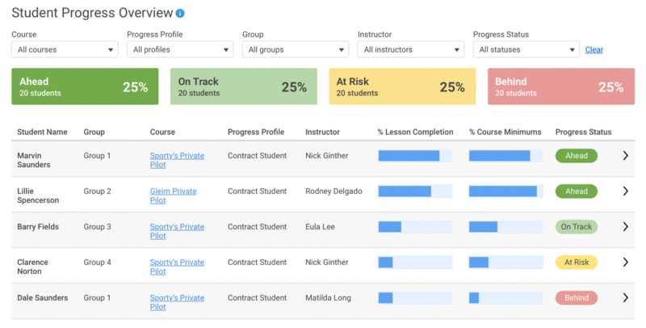
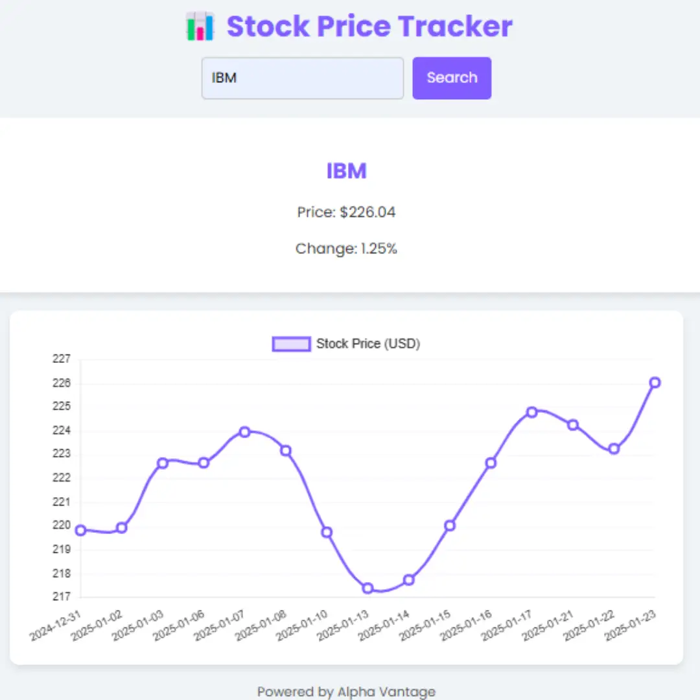

PROGRESS TRACKER FOR STUDENTS

A web application designed to help students monitor their academic progress over a semester.Students can make daily TO DO LISTS to keep track of their work. Users can enter scores, assignments, or attendance records and visualize performance using interactive charts. The dashboard highlights trends and areas for improvement, helping users set goals and track achievements.There's also a section for improvement where users can keep track of topics and concepts on which they need to work on.
- Input and track academic scores and assignments.
- Visualize progress with interactive charts.
- Set academic goals and monitor achievements.
Technologies used: Python (Flask), HTML, CSS, JavaScript, Chart.js
MARKET PRICE TRACKER

A dynamic web application that allows users to monitor real-time prices and trends of stocks across various companies and exchanges. The tracker fetches live market data from financial APIs, enabling users to search for specific stocks, view current prices, percentage changes, and historical charts. Users can set personalized watchlists and price alerts to stay updated on market movements. The intuitive dashboard features interactive graphs for easy trend analysis, making it ideal for investors, learners, and anyone interested in the stock market. The app is designed with a user-friendly interface and adapts seamlessly to both desktop and mobile devices.
- Search and select products to track prices.
- View historical price trends with interactive charts.
- Uses APIs for reliable, up-to-date financial data
- Mobile friendly, simple interface.
Technologies used: HTML, CSS, JavaScript, Chart.js, APIs
DOCTOR BOT

An innovative web-based chatbot designed to assist users with healthcare-related queries and basic medical guidance. Leveraging artificial intelligence and natural language understanding, the chatbot can answer common health questions, help users assess symptoms, suggest possible next steps, and provide information about medicines, nutrition, and wellness. The chatbot maintains conversational empathy and privacy, making healthcare information accessible 24/7. It can guide users to trusted medical resources, help locate nearby clinics or pharmacies, and escalate to human experts for urgent questions. With its simple, user-friendly interface, the chatbot aims to improve health awareness and support digital-first care.
- 24/7 availability and strict user privacy.
- Locates nearby hospitals, clinics, or pharmacies using user location.
- Symptom checker for preliminary triage and health advice.
Technologies used: HTML, CSS, JavaScript, open AI for chatbot capability.